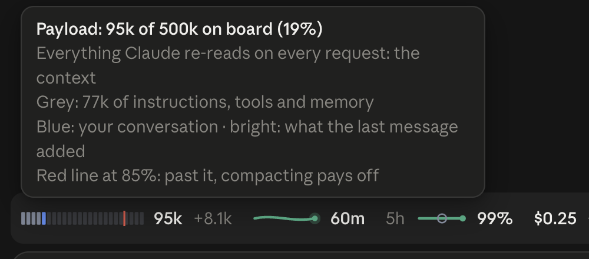
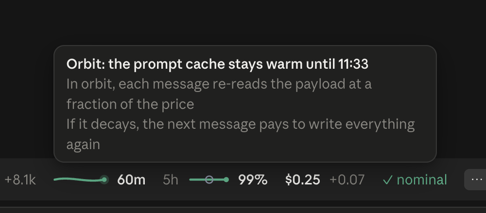
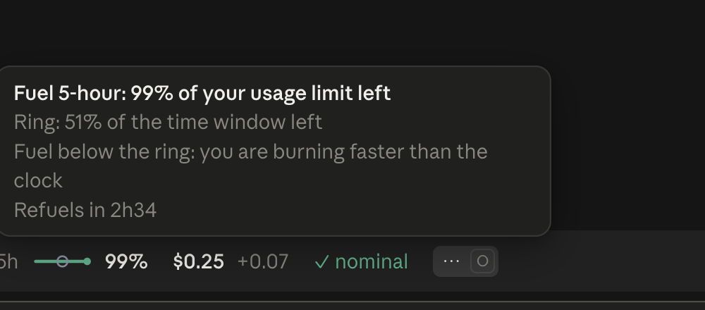
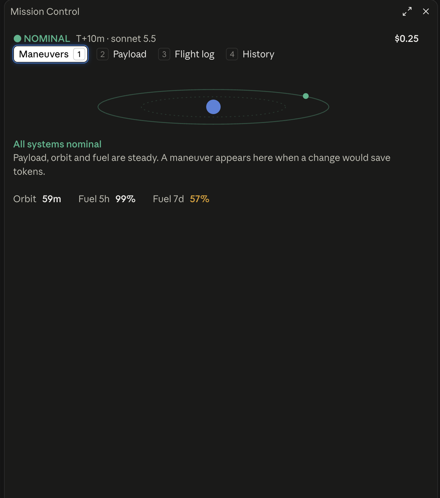
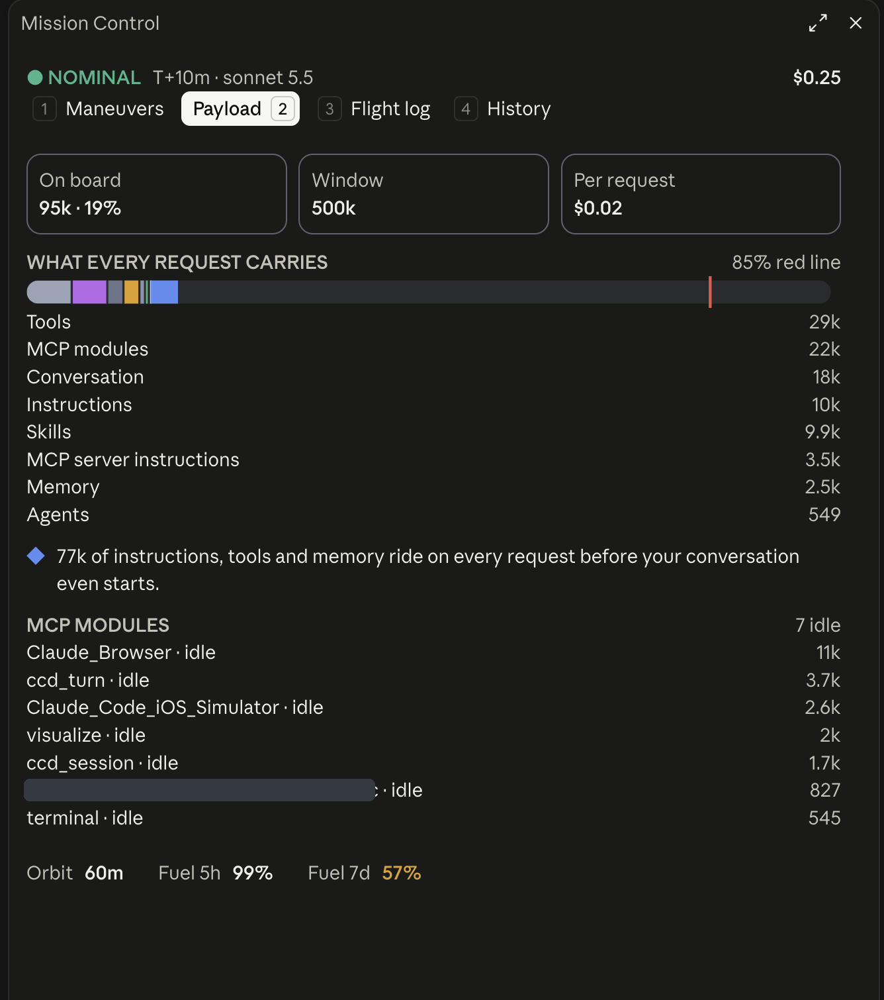
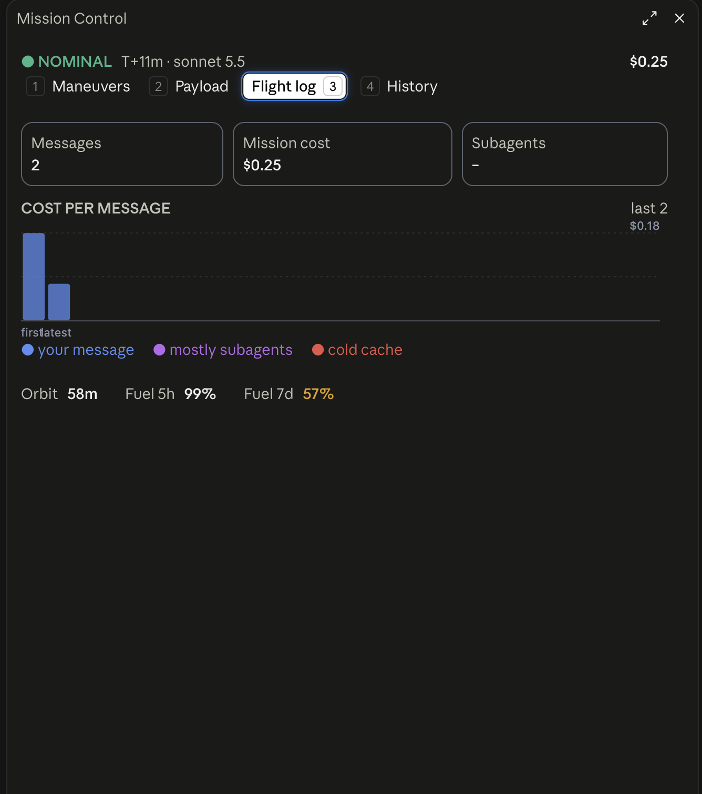
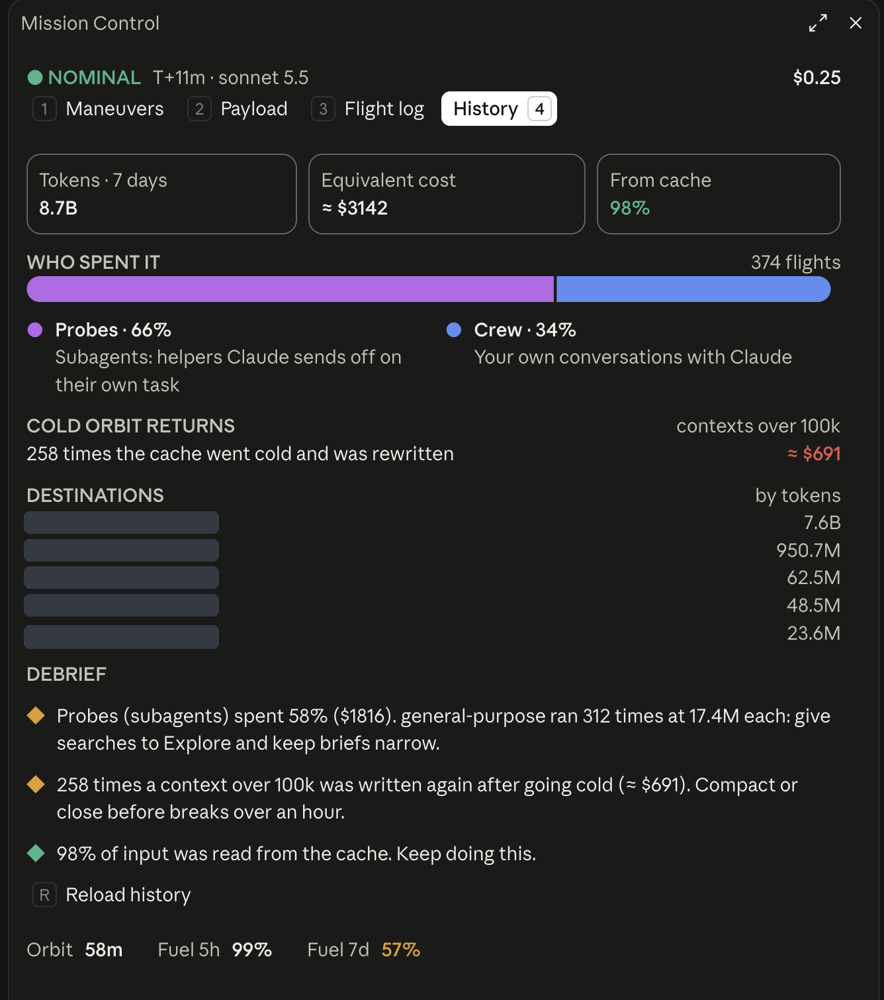

Mission
Control
See where your tokens go, and the one move that saves the most right now. One strip above the prompt, one side pane, and an automatic compact before the cache goes cold.
 The strip, as it shows in Claude: payload · cache orbit · fuel for 5 hours and 7 days · spend · next move · ⋯
The strip, as it shows in Claude: payload · cache orbit · fuel for 5 hours and 7 days · spend · next move · ⋯
Five instruments and a move
What rides on every request against the model's window. Grey is fixed weight, blue your conversation, a red line at 85% marks where compacting pays off.
Minutes left before the prompt cache cools. Warm, each message re-reads the payload at a fraction of the price. Cold, it pays to write it all again.
Usage left in the 5-hour and 7-day limits, raced against the clock. Fuel below the ring means you burn faster than time passes.
What the session has cost so far, and what the last message added, in dollars or reais.
The single action that saves the most right now, with a button to run it. ✓ nominal means nothing needs doing.
Hover for session time, both fuel windows with their refuel times, and your Fable use this week. Click or press O for the pane.
Every number explains itself

Payload. How much is on board and what it is made of.

Orbit. The exact time the cache stays warm until.

Fuel. Usage left, time left in the window, and when it refuels.

Mission status. The whole picture in one card, Fable included.
Four tabs, one question: where did it go?
Maneuvers
Every saving move available now, ranked by money saved. Compact now works even mid-answer: it waits in line and runs when Claude finishes.

Payload
What every request carries, by category, and which MCP servers sit idle but still weigh on every message.

Flight log
The cost of each message in this session, which ones were mostly subagents, and which hit a cold cache.

History
The last 7 days across your projects: tokens, equivalent cost, cache share, who spent it, and lessons to apply.

Leave. Come back cheap.
A large session left alone is compacted a few minutes before its 1-hour cache cools. The next message pays for a short summary instead of rewriting the whole conversation.
Two commands
In Claude Code:
/plugin marketplace add gabrieloy-star/mission-control
/plugin install mission-control@gabriel-mods
Then open a new session. Currency, budget and idle timing live in the plugin's settings.